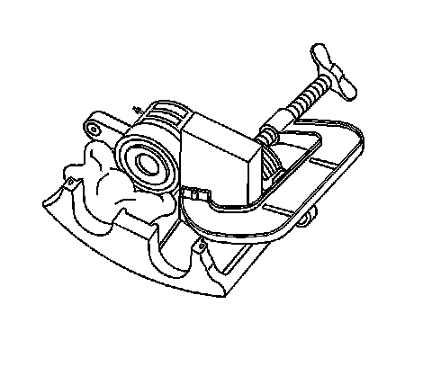
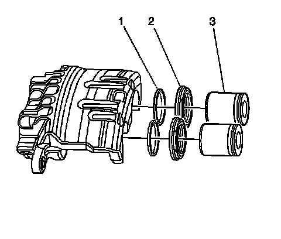
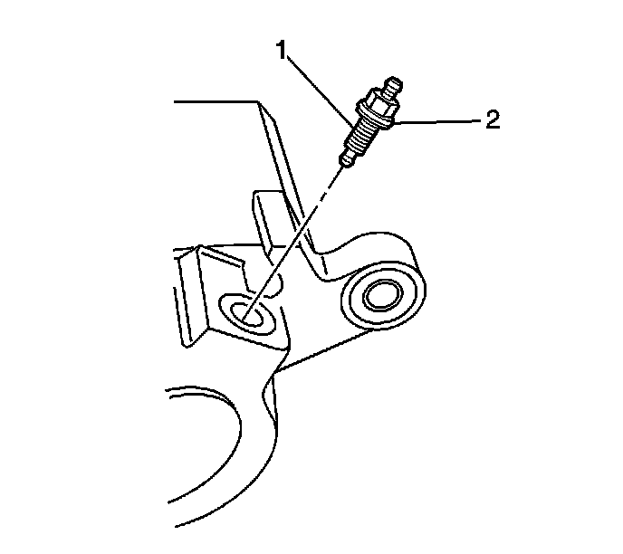
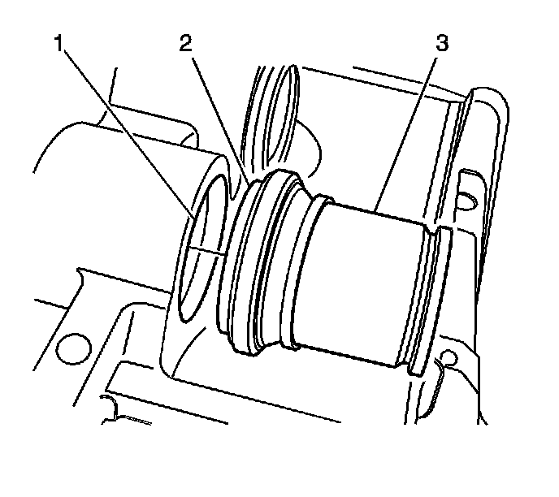
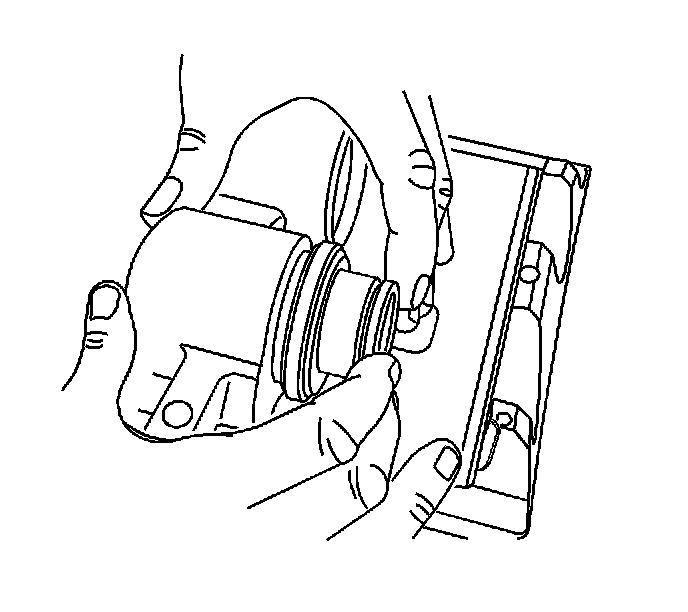

Front Brake Caliper Overhaul
Front Brake Caliper Overhaul
Caution: Refer to Brake Fluid Irritant Caution (Brake Fluid Irritant Caution) .
Caution: Refer to Brake Dust Caution (Brake Dust Caution) .
Notice: Refer to Brake Fluid Effects on Paint and Electrical Components Notice (Vehicle Damage Warnings) .
Disassembly Procedure
Caution: Do not place your fingers in front of the piston in order to catch or protect the piston while applying compressed air. This could result in serious injury.
Important:
* Replace all the components included in the repair kits used to service this brake caliper.
* Lubricate the rubber parts with new Delco Supreme 11(R), GM P/N 12377967 (Canadian P/N 992667) or equivalent DOT-3 brake fluid to make assembly easier.
* If any hydraulic component is removed or disconnected, it may be necessary to bleed all or part of the brake system.
* The torque values specified are for dry, non-lubricated fasteners.
* Perform the service operations on a clean bench, free from all mineral oil materials.
1. Remove the brake caliper from the vehicle. Refer to Front Brake Caliper Replacement (Front Brake Caliper Replacement) .
2. Drain the brake fluid from the brake caliper.

Notice: Use clean cloths to pad interior of caliper housing during piston removal. Use just enough air to ease the pistons out of the bores. If the pistons are blown out, even with the padding provided, it may be damaged.
3. Place a 25 mm (1 in) block of wood between the caliper and the piston.
4. Install a large C-clamp over the body of the brake caliper with the C-clamp ends against the rear of the caliper body and against the block of wood.
5. Carefully remove the brake caliper piston by directing low pressure compressed air into the brake caliper inlet hole.
6. Remove the C-clamp form the caliper.
7. Remove the block of wood from the caliper.
8. Install clean cloths to pad the interior of the caliper housing between the remaining caliper piston and the caliper body.
9. To cover the open caliper bore place a 25 mm (1 in) block of wood between the caliper body and the brake caliper dust boot seal.
10. Install a large C-clamp over the body of the brake caliper with the C-clamp ends against the rear of the caliper body and against the block of wood.
11. Carefully remove the brake caliper piston by directing low pressure compressed air into the brake caliper inlet hole.
12. Remove the C-clamp form the caliper.
13. Remove the block of wood from the caliper.

14. Remove the piston dust boot seals (2) from the seal counter-bores in the brake caliper and discard the boot seals.
15. Using a small wooden or plastic tool, remove the piston seals (1) from the brake caliper bores and discard the piston seals.

16. Remove the brake caliper bleeder valve cap.
17. Remove the brake caliper bleeder valve (1).
18. Remove the brake caliper bleeder valve seal (2) and discard.

Important: Do not use abrasives to clean the brake caliper pistons.
19. Inspect the brake caliper mounting bracket guide surfaces for corrosion and wear. Remove and replace the brake caliper mounting bracket if damaged or worn.
20. Clean the brake caliper piston bores and seal counter-bores with denatured alcohol, or equivalent.
21. Clean the brake caliper pistons with denatured alcohol, or equivalent.
22. Dry the caliper piston bores and counter-bores with non-lubricated, filtered air.
23. Dry the brake caliper pistons with non-lubricated, filtered air.
24. Inspect the caliper bores for cracks, scoring, pitting, excessive corrosion.
25. If light corrosion is present in the caliper bores, attempt to remove the imperfection with a fine emery paper. If the imperfection cannot be removed, replace the caliper assembly.
26. If cracks, scoring, pitting, and excessive corrosion are present in the caliper bores, replace the caliper assembly.
27. Inspect the caliper pistons for cracks, scoring, and/or damage. Replace the caliper pistons if any of these conditions exist.
Assembly Procedure
Notice: Refer to Fastener Notice (Fastener Notice) .
1. Install the valve stem seal (2) over the threaded end of the bleeder valve (1).
2. Install the brake caliper bleeder valve (1).
Tighten the brake caliper bleeder valve to 14 N.m (124 lb in).
3. Install the brake caliper bleeder valve cap.
4. Lubricate the new piston seals (1) with Delco Supreme 11(R), GM P/N 12377967 (Canadian P/N 992667) or equivalent DOT-3 brake fluid from a clean, sealed brake fluid container.
5. Install lubricated piston seals (1) into the brake caliper bore seal grooves.
6. Make sure the seals are not twisted.

7. Install the piston dust boot (2) over the end of the piston (3) so that the fold will face toward the brake caliper housing piston bore opening.
8. Seat the caliper dust boot into the brake caliper bore groove (1) and slide the piston into the brake caliper bore.

9. Using your fingers, carefully push the piston to the bottom of the brake caliper bore.
10. Ensure that the caliper dust boot is properly seated into the piston groove and into the groove in the brake caliper bore.
11. Repeat steps 5 and 6 for the remaining piston.
12. Install the brake caliper to the vehicle. Refer to Front Brake Caliper Replacement (Front Brake Caliper Replacement) .